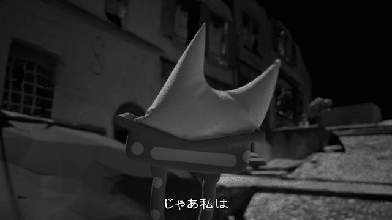
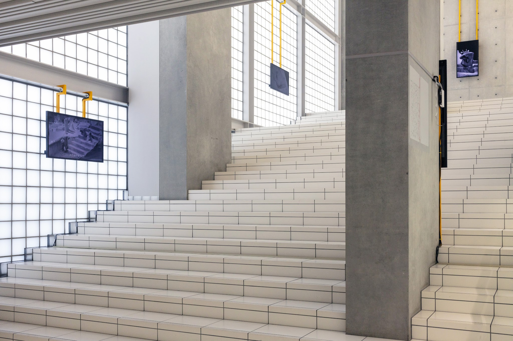
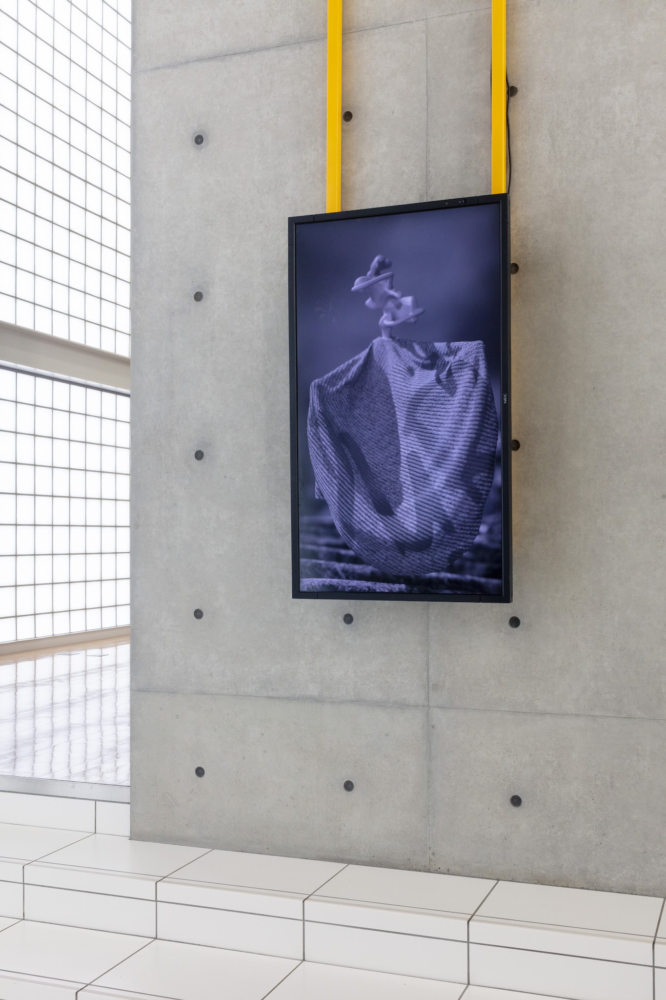
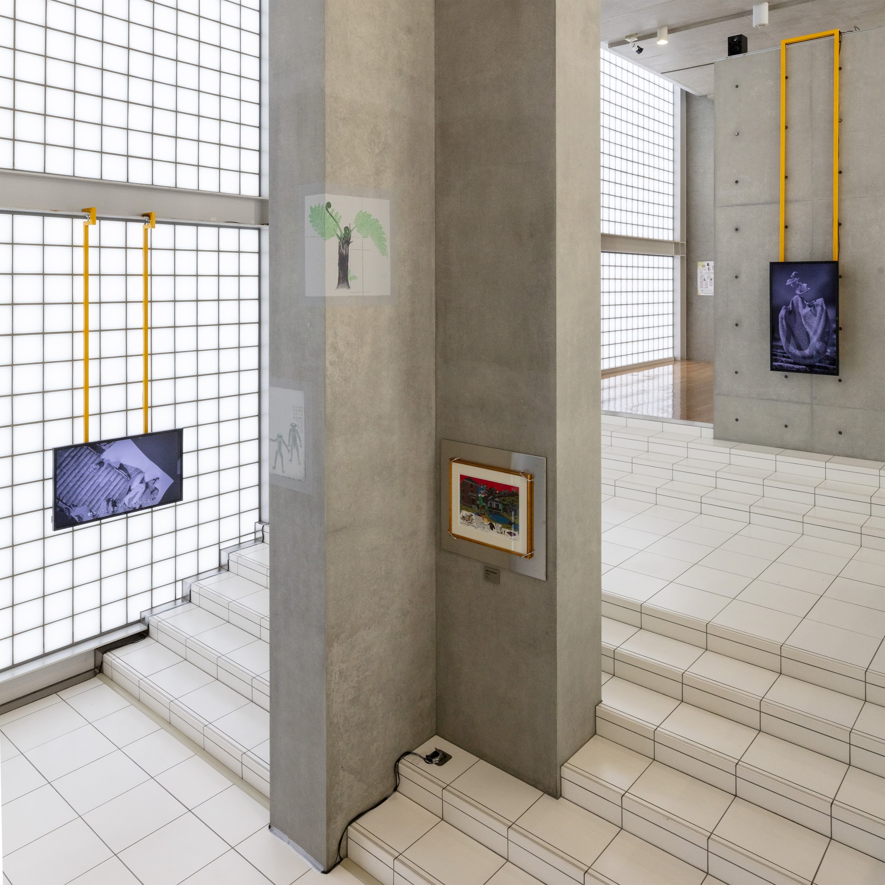
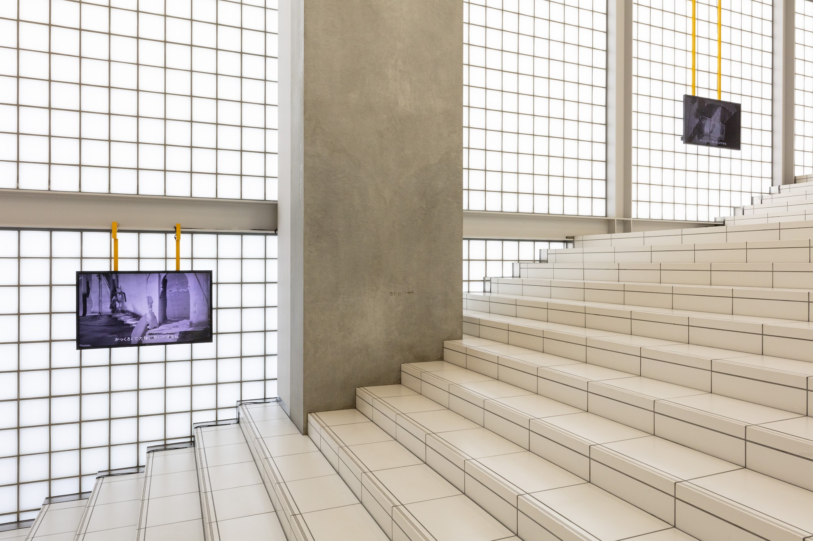
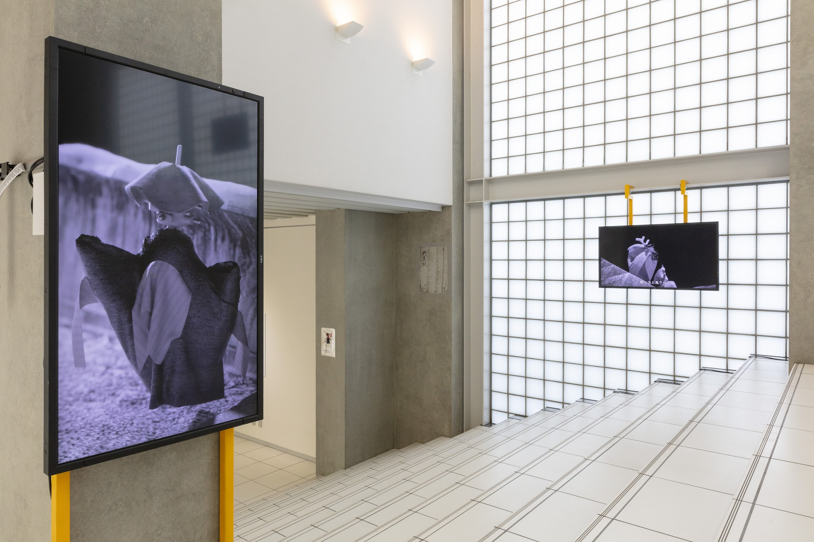

JPハンドメイドムーブメント season 1.5 大体の事柄は布に覆われてしまっている 階段の上と下で
ENHandmade movement season 1.5 Most Matters Are Obscured by Cloth, at the top and bottom of the stairs
2023





撮影 城戸保
Credit
Voice
Mikako Hiyori
Hiro Fujimura
Motion actor
Right Hand:Mitsuru TOKISATO
Left Hand:Mitsuru TOKISATO
Modeler:Mitsuru TOKISATO
Casting:Mitsuru Tokisato
Technical director:Mitsuru TOKISATO
Script editor:japanese-gpt-1b
Script consultant:Mitsuru TOKISATO
Director:Mitsuru TOKISATO
Tool Development:Tokisato Miztsuru
SOUND: suzueri
Track from [Fata Morgana] (Ftarri, 2020)
Recording and mastering by Makoto Oshiro
Exhibitions
2023.10.14-11.05 《国際芸術祭地域展開事業 なめらかでないしぐさ》